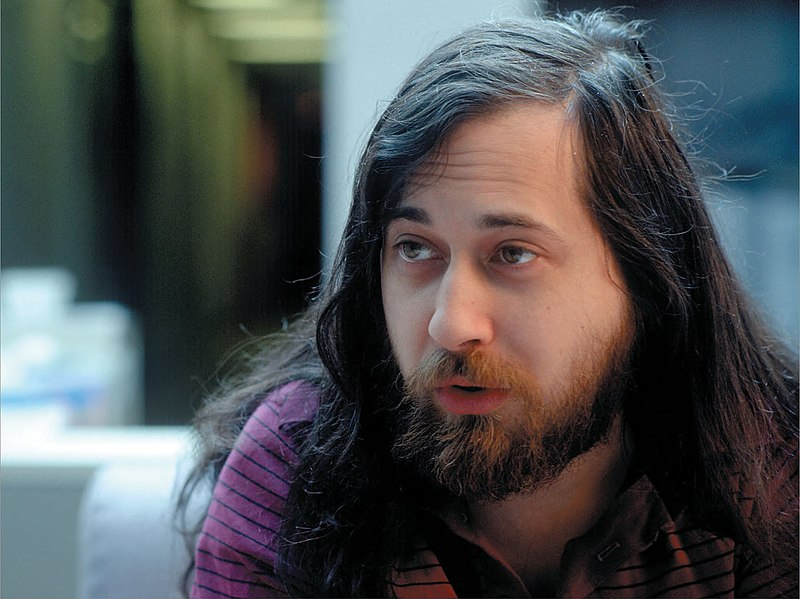

Hyperblog
Tu blog de Confianza
Hyperblog
Tu blog de Confianza
Software libre, para una sociedad libre.
CADA GENERACIÓN TIENE SU FILOSOFO: un escritor o un artista que plasma la imaginación de una época. A veces estos filósofos son reconocidos como tales, pero a menudo pasan generaciones antes de que se caiga en la cuenta. Sin embargo, con reconocimiento o sin el, cada época queda marcada por la gente que expresa sus ideales, sea en el susurro de un poema o en el fragor de un movimiento político.

Nuestra generación tiene un filosofo. No es un artista, tampoco un escritor profesional. Es un programador. Richard Stallman comenzó su trabajo en los laboratorios del MIT como programador y arquitecto desarrollando software de sistemas operativos. Ha desarrollado su carrera en la vida publica como programador y arquitecto fundando un movimiento por la libertad en un mundo cada vez mas definido por el código. El "código" es la tecnología que hace que los ordenadores funcionen. Este inscrito en el software o grabado en el hardware, es el conjunto de instrucciones, primero escritas como palabras, que dirigen la funcionalidad de las maquinas. Estas maquinas (ordenadores) definen y controlan cada vez mas nuestras vidas. Determinan como se conectan los teléfonos y que aparece en el Televisor. Deciden si el video puede enviarse por banda ancha hasta un ordenador. Controlan la información que un ordenador remite al fabricante. Estas maquinas nos dirigen. El código dirige estas maquinas. ¿Qué control deberíamos tener sobre el código?¿Que comprensión? ¿Qué libertad debería haber para neutralizar el control que permite?
Link del Repositorio en GitHub
Muchas gracias por leer :D